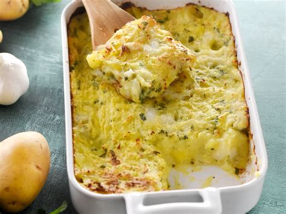

home
ODIN recipes
Brandade de morue
A succulent mixture of mashpotatoes and fish !

Ingredients:
- 1 pound salted cod fish
- 1 ½ cups whole milk
- 6 sprigs fresh thyme
- 2 bay leaves
- 1 pinch cayenne pepper
- 1/4 pound of butter
- 1 pound Yukon Gold potatoes, peeled and cut into 2-inch chunks
- 8 large cloves garlic, halved
- 1 teaspoon lemon zest
- ¼ cup extra-virgin olive oil, divided
- 1 pinch freshly ground black pepper
Steps:
- Preheat oven to 450 degrees F (230 degrees C). Lightly grease a baking dish and set dish on a baking sheet.
- Rinse salt cod under cold water, transfer to a sealable container and cover with several inches of cold water. Soak cod in the refrigerator, changing the water every few hours, for 24 to 36 hours. Remove cod from water and cut into evenly-sized pieces.
- Stir cod, milk, thyme, bay leaves, and cayenne pepper together in a pot over medium-high heat. Cook until fish begins to flake; 7 to 15 minutes. Remove from heat and strain; reserve cooking liquid and transfer fish to a bowl.
- Place potatoes and garlic in a large pot and cover with water; bring to a boil. Reduce heat to medium-low and simmer until tender, about 20 minutes. Drain.
- Mash cod, a few splashes reserved cooking liquid, and lemon zest together in a bowl. Pour in remaining reserved cooking liquid and potatoes; mash until desired consistency is reached. Stir in 1/2 of the olive oil, lemon juice, and black pepper until smooth. Add remaining olive oil and blend until smooth. Season with salt. Pour mixture into prepared baking dish. Spread creme fraiche over the top and score the top with a spoon to create a crisscross surface.
- Bake in the preheated oven until browned and bubbling, about 20 minutes